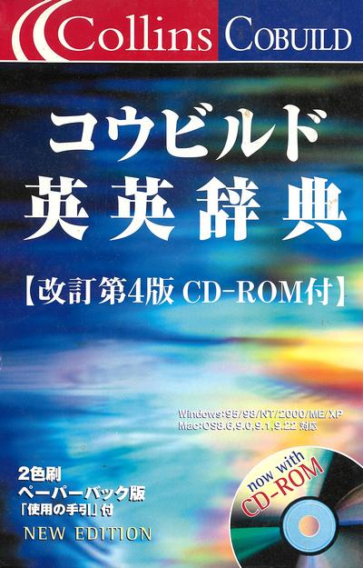
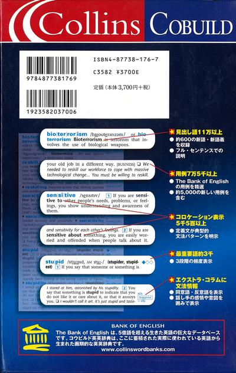
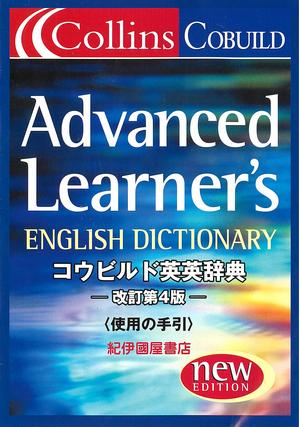

本棚から
留学、英語学習に役立つ本 Collins Cobuild コウビルド英英辞典
【改訂第４版 CD-DOM付】


2002年の暮れにニュージーランドから帰国し、実家で療養しながら暮らしていた時に、街の大きな書店で見て、思わず購入してしまいました。内容としては、別記事、「COLLINS COBUILD LEARNER'S DICTIONARY」とほぼ同じなのですが、この版の大きな特徴は、非常に良く出来た英英辞書ソフトウェアが収録された CD-ROM が付いていることです。私が持っている第４版の CD-ROM ソフトウェアは、Windows 10 でも問題無く動作しています。ただ、ヘルプ機能だけは新しいOSに対応していないようで、Microsoft サポートページと、
DoldoWorkz－緑の妖精の実験室 さんの
Windows10用WinHlp32.exeインストールバッチファイル という記事を参照に作業したら、無事ヘルプファイルが読めるようになりました。多謝です。
また、アマゾンのユーザーレビューページには、第５版のCD-ROMソフトは、Linux + Wine の環境下でほぼ完動するとの書き込みもありましたので、Linuxユーザーの皆様もどうぞご利用下さい。
このCollins COBUILD on CD-ROM 英英辞書ソフトがとても優れているなぁと思うのは、
- apple という単語を検索窓に入力すると、すぐにパソコンから、単語の発音が再生されます。（メニューの Edit→Options→System タブ→ Automatically Pronounce every entry にチェックを入れておく必要があります。）
- 他のアプリで、単語をコピーすると、自動的にこの英英辞書ソフトの検索窓にペーストされ、検索と発音が行われます。（メニューの Edit→Options→System タブ→ Automatically Paste words from Clipboard にチェックを入れておく必要があります。）
- apple, apples といった単数形・複数形、あるいは、good, better, best といったそれぞれの比較級について、すべての単語の発音が聞けます。
- good と言う単語を調べると、
1: Good means pleasant or enjoyable. という定義、さらに、
We had a really good time together...（中略）、ADJ という分類、
さらには、bad という反意語も表示されます。
そして、結果出力欄の really とか bad という単語をクリックすると、瞬時にその単語が検索され、結果が表示され、とてもスピーディに次から次へと検索できます。また、もとの単語に戻ることも出来ます。英英辞書を使う時に悩まされる、永久的などうどうめぐりから解放されます！
僕がニュージーランドで購入した COLLINS COBUILD LEARNER'S DICTIONARY に比べ、紀伊國屋書店から出版されているので、日本語で書かれた懇切丁寧な〈使用の手引き〉が付属しています。

大阪大学の齊藤俊雄名誉教授が推薦文を書かれています。引用させていただくと、コウビルド英英辞典 改訂第4版を推薦する！
大阪大学名誉教授、英語コーパス学会初代会長 齊藤俊雄
この度 Collins COBUILD Advanced Learner's English Dictionary の改訂第4版が出た。本辞書の初版は 1987年に出版されたが、英語の辞書編集に始めて本格的なコンピュータ・コーパスを用いた先駆的辞書であった。
出版当時、この初版は辞書出版で伝統のある英国の出版社 Collins (現 HarperCollins) とパーミンガム大学英語科との共同プロジェクト COBUILDによる画期的な成果として注目を集め、その後の辞書編集を方向付けるインパクトを与えたものである。コーパス言語学は1960年代の Brown Corpus の誕生に始ま り、コンピュータの発達とともに興隆した言語研究の新しい方法論であり、その実用面では辞書編集が最も目覚しい成果をあげている。言うまでもなく、COBUILD は世界的にその最先端を行くものである。
最近のコーパスの傾向の一つは大規模化にあるが、その大規模コーパスの双壁の一つが本書の基盤になった5億2000万語の Bankof English (BoE) であり、もう一つは1億語の British National Corpus (BNC) である。コーパスには一時期の一定量のテキストを集めた 'samplecorpus' と、次々と新しいテキストを加えていく 'monitor corpus' があるが、 BNCは前者であり、BoE は後者である。言語は絶えず変化していく。その変化に応じて次々と改訂していく辞書の編集にとって、モニターコーパスが合理的であるのは言うまでもない。本辞書は、常に最新の英語を反映するよう新テキストを収集している世界最大の英語コーパス BoE に基づいた現代英語の辞書である。時代の推移に応じて 改訂を重ねてきたが、この度の改訂によって、本辞書はさらに up-to-date になったわけである。
本辞書は、表題に "Advanced Learner's" とあり、大学生レベルの英語学習者を対象としているが、見出し語の定義が基本語葉の2,500語を使った平易な英語で説明されており、意欲のある高校生にも十分利用できるであろう。また、これは学習辞典の範曙に入るが、われわれ英語研究者にとっても、real English について貴重な最新情報を与えてくれる宝庫である。
また付属のCD-ROM版は、辞書本体に加え、500万語のコーパス Wordbank を収めていて、User Guideにあるとおり、書籍版とは一味違った利用ができる。パソコン上で単語の発音を聞き、自分の発音を吹き込み比べることもできるし、また Wordbank を検索して多くの用例に当たることも可能である。われわれは、書籍版とCD-ROM版とをうまく利用することによって、より効果的な英語学習ができるであろう。
2020年3月時点では、アマゾンを検索すると、【改訂第５版 CD-DOM付】2006年刊 が出ていますが、すべて中古品となっており、驚愕の1,400円程度で販売されています。とてもお勧めです。商品の説明には
Bank of English,part of Collins Word Web「世界共通語としての英語」というコンセプトに配慮して企画、制作された本書は、6億4千万語以上を含むコーパス、Bank of Englishの膨大なデータベースに蓄積された、「生きた英語」を駆使した、画期的な英英辞典です。
第５版のカスタマーレビューも、高評価の回答が多いです。中古本にはなりますが、CD-ROM辞典ソフトも付属して、送料込み 1,700円ほどで買えるのですから、英語を学びたい方にはぜひお勧めしたい辞典です。
本棚から 目次へ
サイトマップ
ホームへ
お問い合わせ